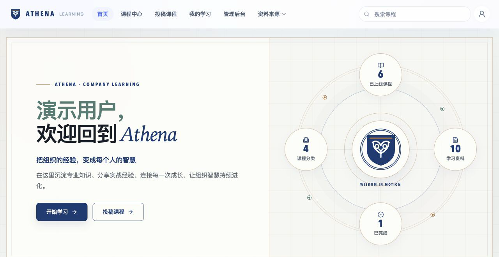
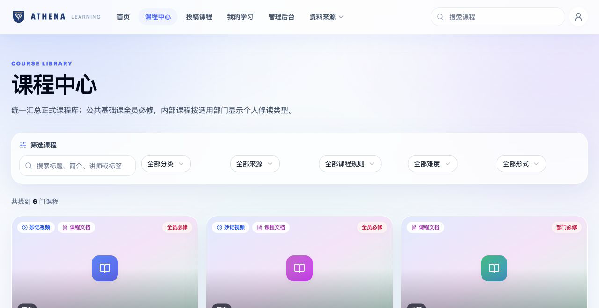
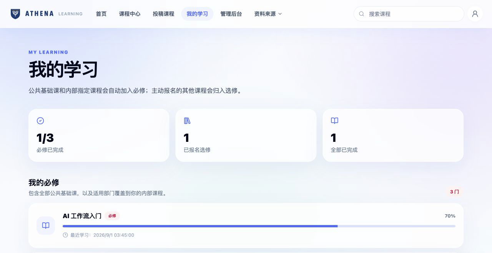
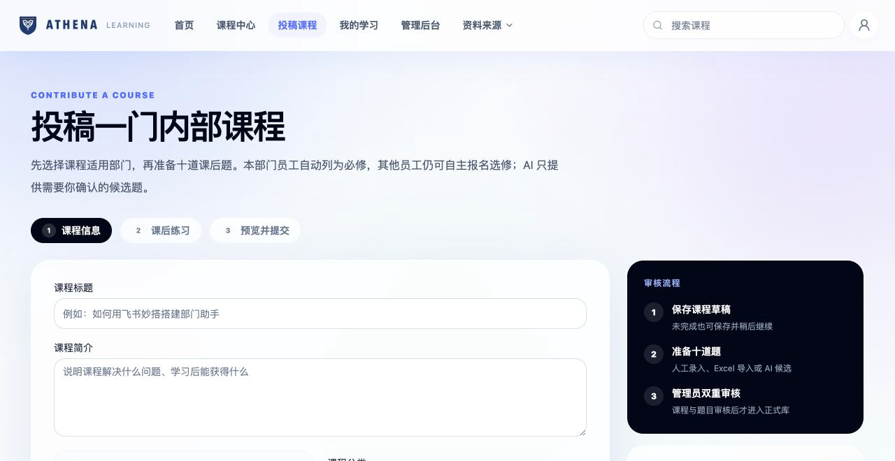
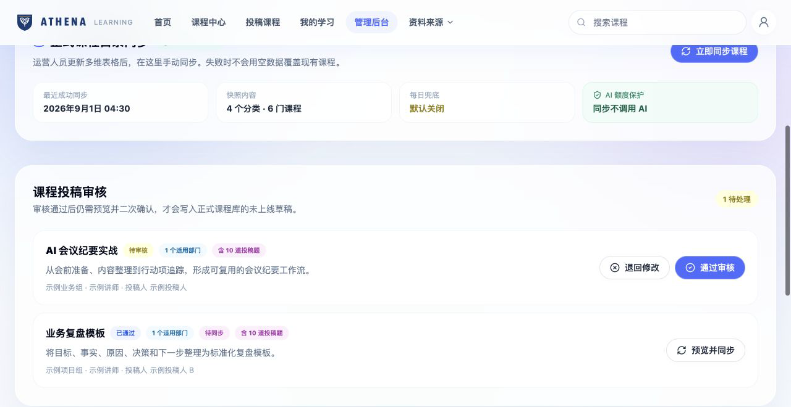
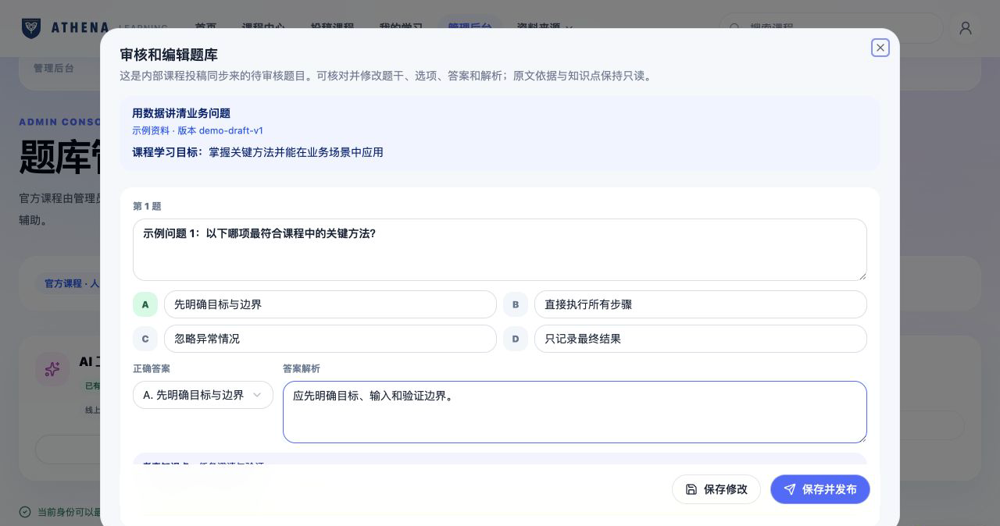
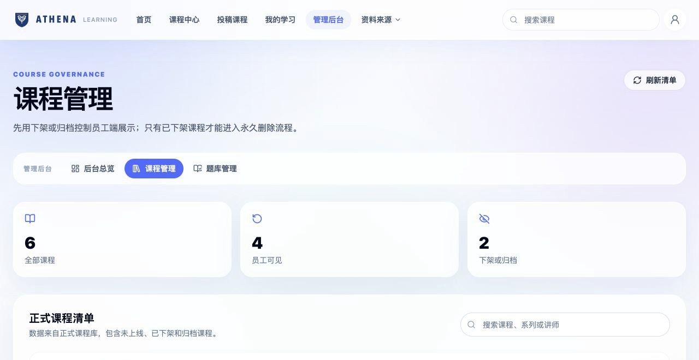
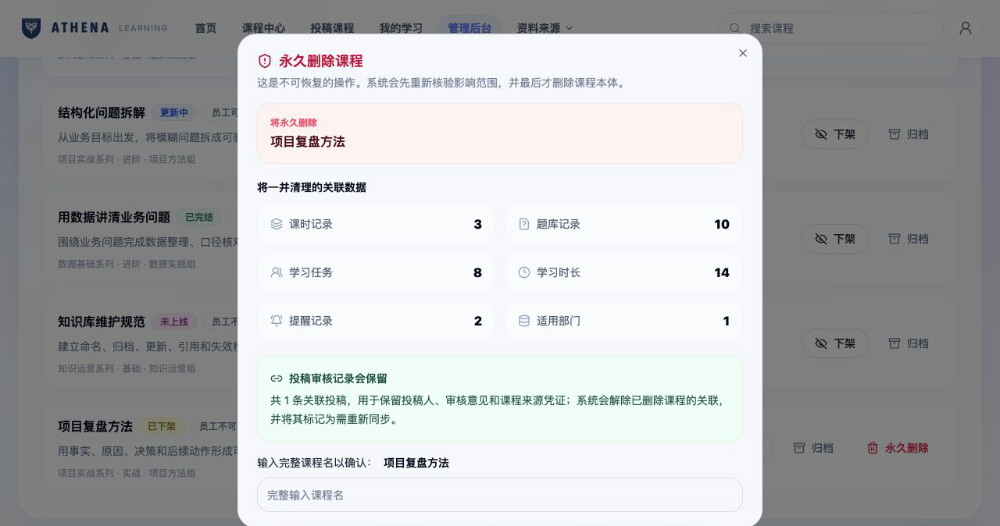

学习者
找课程、区分必修与选修、继续学习、查看进度。
SANITIZED PRODUCT CASE · 企业学习平台
Athena 将课程发现、内容投稿、人工审核、学习进度、AI 辅助题库和课程生命周期治理串进同一套流程。 公开仓库展示真实界面结构与产品决策；所有人物、部门、课程、数量和链接均为合成示例。

THE ASSIGNMENT
难点不在于做出一张课程列表，而在于先弄清楚不同角色真正要完成什么，再把权限、状态、异常与人工确认放进流程。
我的工作集中在需求澄清、流程拆解、AI 辅助开发、测试验证与安全边界；没有把“能生成”当作“可上线”。
找课程、区分必修与选修、继续学习、查看进度。
保存草稿、补齐适用部门与题目、提交审核。
核对内容和题目，退回修改或受控同步为草稿。
同步目录、查看学习状态、下架归档、预览删除影响。
CONTROLLED WORKFLOW
顺序不是装饰；每一段都对应一个状态、一个责任人和一个可检查结果。
INTERFACE EVIDENCE
以下截图来自公司版前端的本机脱敏镜像。页面结构与交互保持一致，运行数据全部替换为示例。
课程中心支持按分类、来源、修读规则、难度与形式筛选；“我的学习”将全员必修、部门必修和主动报名拆开，避免把所有课程都堆在同一页。


投稿者先保存课程信息和适用部门，再准备十道题并提交。管理员能退回修改、通过审核，或在同步前重新预览；课程与题目都不会因为一次点击直接公开。


AI 可以依据课程资料生成候选问题，但题干、选项、答案、解析、知识点与原文依据均需人工核对。管理员保存修改后，仍要单独执行发布。

日常治理优先使用下架、恢复和归档。只有已下架课程才能进入永久删除预览；预览会列出课时、题库、学习任务、时长、提醒与适用部门等关联影响。


EVIDENCE & BOUNDARIES
MY CONTRIBUTION
项目使用 AI 编程工具加速实现，但需求边界、状态设计、人工门禁、测试取舍和公开范围由我负责判断。
查看仓库与验证说明 ↗